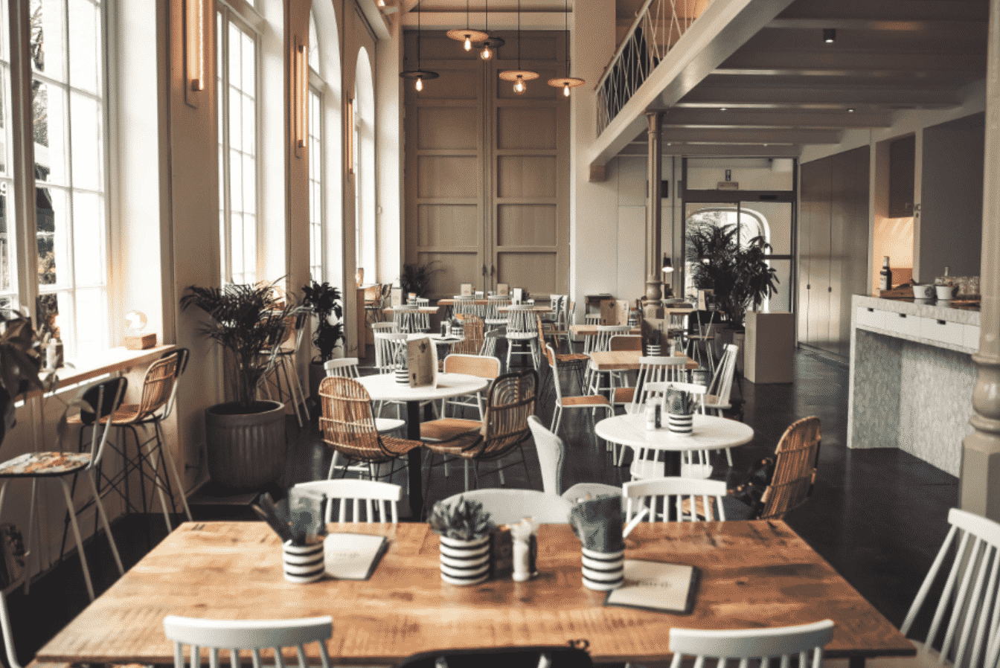

About Us
Top 5 Sheffield is a guide to the personally judged five best experiences of any given category, within the Steel City. This website was conceived of by four like-minded individuals; students who share a passion for Sheffield and hope to show off it’s finest establishments. We strongly believe in the importance of supporting local businesses, as demonstrated by our selections, while never scrimping on quality.Particularly during the Covid-19 pandemic, many residents and students in the city have not had the opportunity to experience what Sheffield has to offer; this website hopes to offer some guidance. Whether you’re a student looking for the best night out, or a couple searching for a restaurant to celebrate your anniversary, Top 5 Sheffield has it all.
Furthermore, with it’s interactive star-rating review system, we hope that the community will expand and improve our knowledge and appreciation of a wide-range of different establishments, while remaining focused on the local area. Have an exceptional cafe recommendation, or a favourite bar that you’re shocked hasn’t made it onto the list? Let everyone know about it!
The creators of this website would like to thank Code First Girls, for being the driving force behind this initiative. Code First Girls is a not for profit social enterprise dedicated to transforming tech by providing the skills, space, and inspiration for women to enter the workspace. Graduates of their programmes have become highly sought after developers and leaders in their fields. This website was conceived of by our group in the Autumn 2020 Introduction to Web Development course, based at The University of Sheffield.
Top 5 Cafes in Sheffield

Cafes
Top 5 Restaurants in Sheffield
Restaurants
Top 5 Bars and Pubs in Sheffield
Bars and Pubs
Top 5 for Nightlife in Sheffield
Nightlife